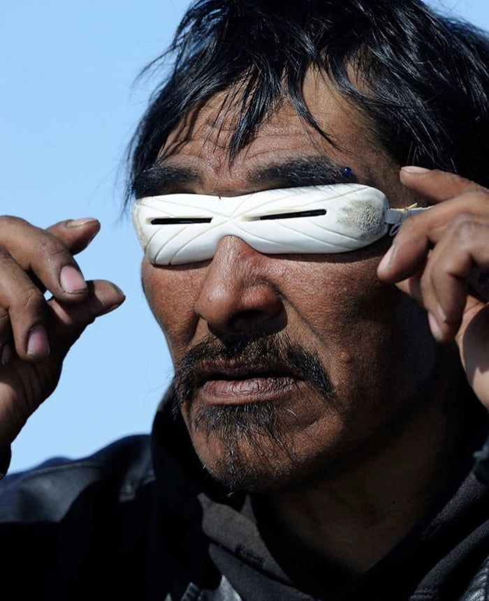
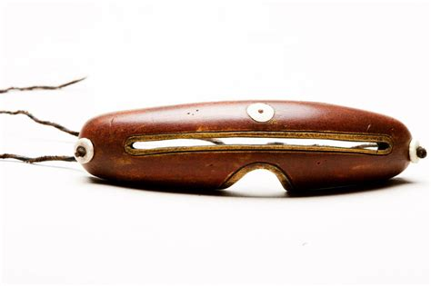
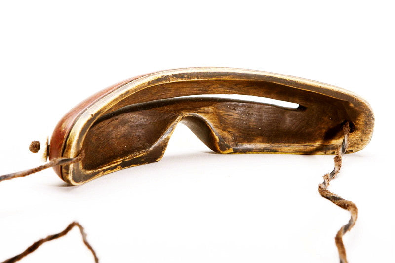

Projects
Home
Current Projects
Focus Goggles
A little while back, my friend David showed me a modification he had made to a pair of gardening sunglasses; the kind that shield the sides of the eyes as well as the front. He had put black tape on the sides and front of the glasses, but he left two slits untaped on the front near his eyes. This effectively made the glasses into blinders that restricted his field of vision to only what was in front of him.
I thought this was a great idea, and it reminded me of something I had seen online a few years back. The Inuits in Scandinavia and in other arctic areas make goggles to protect their eyes from the bright sunlight that reflects off the snow. In fact, snow blindness is a real and serious condition caused by overexposure to UV light, so these goggles are necessary to protects the eyes of the Inuit peoples. The goggles they wear are generally made out of wood or bone. They carve the goggles to fit their own face, and in some cases they carve or paint patterns on the outer suface. The photos below show two examples of these goggles.



Evaporative Cooler
Learning Trumpet
Past Projects